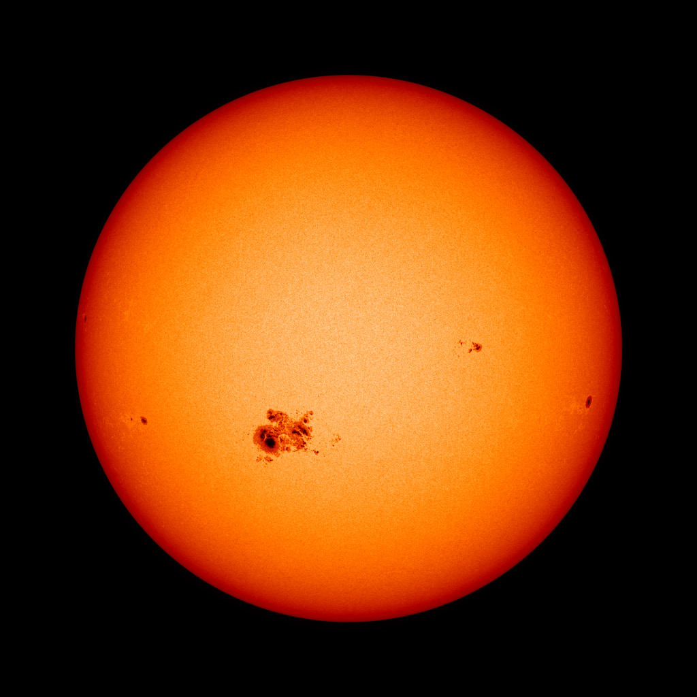
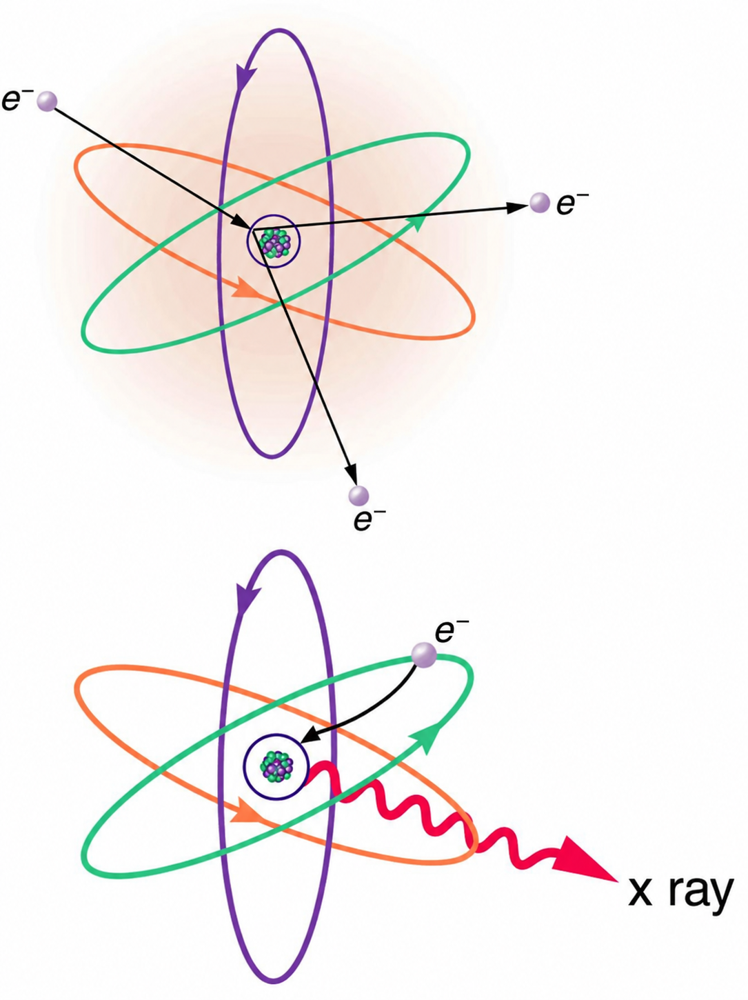

18 proposed groups. Nothing on this page has been applied to the maintained textbook. “Before” includes approved Priority 3 edits where applicable. Final application of Priority 3 and this batch remains coordinated.
Closest reading: P4-01–03 (entropy), P4-07 (Michelson–Morley), P4-09 (radiocarbon calibration), and P4-15–16 (radio physics). The other groups are mostly local repairs. Source links and precise locations follow each group. External sources support facts; no outside prose or artwork is imported.
Read closely: the conceptual bridge, macrostate definition, and limits of the analogy.
Keep the coin-counting approach and the word disorder, but identify the relevant meaning: how many microscopic arrangements fit a macroscopic description. A tossed-coin model is an analogy, not a measurement of the coins’ thermal entropy.
The various ways of formulating the second law of thermodynamics tell what happens rather than why it happens. Why should heat transfer occur only from hot to cold? Why should energy become ever less available to do work? Why should the universe become increasingly disorderly? The answer is that it is a matter of overwhelming probability. Disorder is simply vastly more likely than order.
Proposed for 1.1
The various ways of formulating the second law of thermodynamics tell what happens rather than why it happens. Why should heat transfer occur spontaneously only from hot to cold? Why should energy become ever less available to do work? Why should the universe become increasingly disorderly? The answer is that it is a matter of overwhelming probability. There are vastly more microscopic arrangements corresponding to disorder than to order.
When you watch an emerging rain storm begin to wet the ground, you will notice that the drops fall in a disorganized manner both in time and in space. Some fall close together, some far apart, but they never fall in straight, orderly rows. It is not impossible for rain to fall in an orderly pattern, just highly unlikely, because there are many more disorderly ways than orderly ones. To illustrate this fact, we will examine some random processes, starting with coin tosses.
Proposed for 1.1
When you watch an emerging rain storm begin to wet the ground, you will notice that the drops fall in a disorganized manner both in time and in space. Some fall close together, some far apart, but you might never see them fall in straight, orderly rows. It is not impossible for rain to fall in an orderly pattern, just highly unlikely, because there are many more disorderly ways than orderly ones. To illustrate this fact, we will examine some random processes, starting with coin tosses.
These are what we call macrostates. A macrostate is an overall property of a system. It does not specify the details of the system, such as the order in which heads and tails occur or which coins are heads or tails.
Proposed for 1.1
These are what we call macrostates. A macrostate is a description of a system in terms of its macroscopic properties. It does not specify the details of the system, such as the order in which heads and tails occur or which coins are heads or tails.
The macrostate of 3 heads and 2 tails can be achieved in 10 ways and is thus 10 times more probable than the one having 5 heads. Not surprisingly, it is equally probable to have the reverse, 2 heads and 3 tails. Similarly, it is equally probable to get 5 tails as it is to get 5 heads. Note that all of these conclusions are based on the crucial assumption that each microstate is equally probable. With coin tosses, this requires that the coins not be asymmetric in a way that favors one side over the other, as with loaded dice. With any system, the assumption that all microstates are equally probable must be valid, or the analysis will be erroneous.
Proposed for 1.1
The macrostate of 3 heads and 2 tails can be achieved in 10 ways and is thus 10 times more probable than the one having 5 heads. Not surprisingly, it is equally probable to have the reverse, 2 heads and 3 tails. Similarly, it is equally probable to get 5 tails as it is to get 5 heads. Note that all of these conclusions are based on the crucial assumption that each microstate is equally probable. With coin tosses, this requires that the coins not be asymmetric in a way that favors one side over the other, as with loaded dice. For this counting argument, the accessible microstates must be equally probable.
The two most orderly possibilities are 5 heads or 5 tails. (They are more structured than the others.) They are also the least likely, only 2 out of 32 possibilities. The most disorderly possibilities are 3 heads and 2 tails and its reverse. (They are the least structured.) The most disorderly possibilities are also the most likely, with 20 out of 32 possibilities for the 3 heads and 2 tails and its reverse. If we start with an orderly array like 5 heads and toss the coins, it is very likely that we will get a less orderly array as a result, since 30 out of the 32 possibilities are less orderly. So even if you start with an orderly state, there is a strong tendency to go from order to disorder, from low entropy to high entropy. The reverse can happen, but it is unlikely.
Proposed for 1.1
The two most orderly possibilities are 5 heads or 5 tails. (They are more structured than the others.) They are also the least likely, only 2 out of 32 possibilities. The most disorderly possibilities are 3 heads and 2 tails and its reverse. (They are the least structured.) The most disorderly possibilities are also the most likely, with 20 out of 32 possibilities for the 3 heads and 2 tails and its reverse. If we start with an orderly array like 5 heads and toss the coins, it is very likely that we will get a less orderly array as a result, since 30 out of the 32 possibilities are less orderly. So even if you start with an orderly arrangement, tossing the coins is likely to produce a less orderly one, illustrating why macroscopic systems left to themselves tend toward higher entropy. The reverse can happen, but it is unlikely.
Explain why a building made of bricks has smaller entropy than the same bricks in a disorganized pile. Do this by considering the number of ways that each could be formed (the number of microstates in each macrostate).
Proposed for 1.1
Why does a gas have greater entropy when it occupies a larger volume at the same temperature? Explain in terms of the microscopic arrangements available to its molecules.
Only the brick-pile question’s unsupported visual-order inference is repaired; this is not the broader exercise revision.
P4-02 — Gas compression, expansion, and total entropy
Approved — awaiting coordinated application.
Read closely: coordinated paragraph and caption changes. Existing artwork is retained.
Compression does not necessarily increase the entropy of the universe: reversible compression leaves the total unchanged. Specify isothermal compression and removal of confinement before free expansion. The low-speed arrows in the existing illustration are not an isothermal-compression diagram.
The most likely conditions (or macrostates) for a gas are those we see all the time—a random distribution of atoms in space with a Maxwell-Boltzmann distribution of speeds in random directions, as predicted by kinetic theory. This is the most disorderly and least structured condition we can imagine. In contrast, one type of very orderly and structured macrostate has all of the atoms in one corner of a container with identical velocities. There are very few ways to accomplish this (very few microstates corresponding to it), and so it is exceedingly unlikely ever to occur. (See Figure 8.14.2(b).) Indeed, it is so unlikely that we have a law saying that it is impossible, which has never been observed to be violated—the second law of thermodynamics.
Proposed for 1.1
The most likely conditions (or macrostates) for a gas are those we see all the time—a random distribution of atoms in space with a Maxwell-Boltzmann distribution of speeds in random directions, as predicted by kinetic theory. This is the most disorderly and least structured condition we can imagine. In contrast, one type of very orderly and structured macrostate has all of the atoms in one corner of a container. There are very few ways to accomplish this (very few microstates corresponding to it), and so it is exceedingly unlikely ever to occur. (See Figure 8.14.2(b).) Indeed, it is so unlikely that we have a law saying that it is essentially impossible—the second law of thermodynamics.
Figure 8.14.2. (a) The ordinary state of gas in a container is a disorderly, random distribution of atoms or molecules with a Maxwell-Boltzmann distribution of speeds. It is so unlikely that these atoms or molecules would ever end up in one corner of the container that it might as well be impossible. (b) With energy transfer, the gas can be forced into one corner and its entropy greatly reduced. But left alone, it will spontaneously increase its entropy and return to the normal conditions, because they are immensely more likely.
Proposed for 1.1
Figure 8.14.2. (a) The ordinary state of gas in a container is a random distribution of atoms or molecules with a Maxwell-Boltzmann distribution of speeds. (b) A spontaneous concentration of the molecules into one corner is overwhelmingly unlikely for a macroscopic gas. If gas is initially confined to a small part of a container and the confinement is removed, it spreads through the available volume.
The disordered condition is one of high entropy, and the ordered one has low entropy. With a transfer of energy from another system, we could force all of the atoms into one corner and have a local decrease in entropy, but at the cost of an overall increase in entropy of the universe. If the atoms start out in one corner, they will quickly disperse and become uniformly distributed and will never return to the orderly original state (Figure 8.14.2(b)). Entropy will increase. With such a large sample of atoms, it is possible—but unimaginably unlikely—for entropy to decrease. Disorder is vastly more likely than order.
Proposed for 1.1
The gas has greater entropy when more positions are available to its molecules. We can reduce its entropy by compressing it at constant temperature, doing work and transferring heat to the surroundings. The entropy gained by the surroundings equals the gas’s entropy decrease for reversible compression, and exceeds it for irreversible compression. If the compressed gas is then allowed to expand freely into an evacuated part of an insulated container, its entropy increases. A spontaneous return to the concentrated state (Figure 8.14.2(b)) is overwhelmingly unlikely. Disorder is vastly more likely than order.
The existing conclusion incorrectly forbids entropy decrease in any macroscopic system. Apply it to an isolated system and preserve the distinction between overwhelmingly unlikely macroscopic fluctuations and ordinary entropy reduction through heat transfer.
where is Boltzmann’s constant, and is the natural logarithm of the number of microstates corresponding to the given macrostate. is proportional to the probability that the macrostate will occur. Thus entropy is directly related to the probability of a state—the more likely the state, the greater its entropy. Boltzmann proved that this expression for is equivalent to the definition , for reversible heat transfer at constant temperature, which we have used extensively. The formula is included here as a reference; no logarithm calculations are needed for this section. The key point is that more microstates correspond to greater entropy.
Proposed for 1.1
where is Boltzmann’s constant, and is the natural logarithm of the number of microstates corresponding to the given macrostate. is proportional to the probability that the macrostate will occur when the accessible microstates are equally probable. Thus entropy is directly related to the probability of a state—the more likely the state, the greater its entropy. Boltzmann proved that this expression for is equivalent to the definition , for reversible heat transfer at constant temperature, which we have used extensively. The formula is included here as a reference; no logarithm calculations are needed for this section. The key point is that more microstates correspond to greater entropy.
Thus the second law of thermodynamics is explained on a very basic level: entropy either remains the same or increases in every process. This phenomenon is due to the extraordinarily small probability of a decrease, based on the extraordinarily larger number of microstates in systems with greater entropy. Entropy can decrease, but for any macroscopic system, this outcome is so unlikely that it will never be observed.
Proposed for 1.1
Thus the second law of thermodynamics is explained on a statistical level: the entropy of an isolated macroscopic system remains constant or increases. Macrostates with greater entropy have vastly more microstates, making a substantial spontaneous decrease overwhelmingly unlikely. A system that exchanges heat with its surroundings can decrease in entropy while the total entropy of the system and surroundings increases or remains constant.
It is not impossible for further tosses to produce the initial state of 60 heads and 40 tails, but it is less likely than 50 heads and 50 tails. The coin model illustrates why a macrostate with more microstates is more likely. For a macroscopic physical system, a substantial spontaneous decrease in total entropy is overwhelmingly unlikely.
Proposed for 1.1
It is not impossible for further tosses to produce the initial state of 60 heads and 40 tails, but it is less likely than 50 heads and 50 tails. The coin model illustrates why a macrostate with more microstates is more likely. For an isolated macroscopic physical system, a substantial spontaneous decrease in total entropy is overwhelmingly unlikely.
P4-04 — Electrical safety: remove one remaining assurance
Approved — awaiting coordinated application.
Small correction; review the wording in context.
The brain-current and high-frequency surface-current claims were already corrected under F2-11. An adjacent dry-skin calculation still calls its estimated current harmless. Removing that word leaves the numerical example intact.
Current is the major factor determining shock severity (given that other conditions such as path, duration, and frequency are fixed, such as in the table and preceding discussion). A larger voltage is more hazardous, but since , the severity of the shock depends on the combination of voltage and resistance. For example, a person with dry skin has a resistance of about . If he comes into contact with 120-V AC, a current passes harmlessly through him. The same person soaking wet may have a resistance of and the same 120 V will produce a current of 12 mA—above the “can’t let go” threshold and potentially dangerous.
Proposed for 1.1
Current is the major factor determining shock severity (given that other conditions such as path, duration, and frequency are fixed, such as in the table and preceding discussion). A larger voltage is more hazardous, but since , the severity of the shock depends on the combination of voltage and resistance. For example, a person with dry skin has a resistance of about . If he comes into contact with 120-V AC, a current passes through him. The same person soaking wet may have a resistance of and the same 120 V will produce a current of 12 mA—above the “can’t let go” threshold and potentially dangerous.
The prior electrical review and sources are recorded in proposals/1.1/fact-check-cycle2.json (F2-09–F2-11). This proposal adds no threshold, medical advice, or new numerical assertion.
P4-05 — Doppler proposal versus Buys Ballot experiment
Approved — awaiting coordinated application.
Small correction; review the wording in context.
The moving-train demonstration was organized by Buys Ballot in 1845. Credit Doppler with the 1842 proposal and correct the connected question.
The Doppler effect is an alteration in the observed frequency of a sound due to motion of either the source or the observer. Although less familiar, this effect is easily noticed for a stationary source and moving observer. For example, if you ride a train past a stationary warning bell, you will hear the bell’s frequency shift from high to low as you pass by. This change in frequency due to relative motion of source and observer is called a Doppler shift. The Doppler effect is named for the Austrian physicist and mathematician Christian Johann Doppler (1803–1853), who did experiments with both moving sources and moving observers. Doppler, for example, had musicians play on a moving open train car and also play standing next to the train tracks as a train passed by. Their music was observed both on and off the train, and changes in frequency were measured.
Proposed for 1.1
The Doppler effect is an alteration in the observed frequency of a sound due to motion of either the source or the observer. Although less familiar, this effect is easily noticed for a stationary source and moving observer. For example, if you ride a train past a stationary warning bell, you will hear the bell’s frequency shift from high to low as you pass by. This change in frequency due to relative motion of source and observer is called a Doppler shift. The Doppler effect is named for the Austrian physicist and mathematician Christian Doppler (1803–1853), who proposed the effect in 1842. In 1845, Christophorus Buys Ballot had musicians play on a moving open train car and also play standing next to the train tracks as a train passed by. Their music was observed both on and off the train, and changes in frequency were measured.
P4-06 — Michelson’s early rotating-mirror measurement
Approved — awaiting coordinated application.
Small correction; review the wording in context.
Introduce the 1879 measurement with its approximately 600-m baseline, retain the roughly 0.04% difference associated with the commonly reported 299,910 km/s result, and distinguish the later 35-km apparatus illustrated in the figure.
Early attempts to measure the speed of light, such as those made by Galileo, determined that light moved extremely fast, perhaps instantaneously. The first real evidence that light traveled at a finite speed came from the Danish astronomer Ole Roemer in the late 17th century. Roemer had noted that the average orbital period of one of Jupiter’s moons, as measured from Earth, varied depending on whether Earth was moving toward or away from Jupiter. He correctly concluded that the apparent change in period was due to the change in distance between Earth and Jupiter and the time it took light to travel this distance. From his 1676 data, a value of the speed of light was calculated to be (only 25% different from today’s accepted value). In more recent times, physicists have measured the speed of light in numerous ways and with increasing accuracy. One particularly direct method, used in 1887 by the American physicist Albert Michelson (1852–1931), is illustrated in Figure 11.7.2. Light reflected from a rotating set of mirrors was reflected from a stationary mirror 35 km away and returned to the rotating mirrors. The time for the light to travel can be determined by how fast the mirrors must rotate for the light to be returned to the observer’s eye.
Proposed for 1.1
Early attempts to measure the speed of light, such as those made by Galileo, determined that light moved extremely fast, perhaps instantaneously. The first real evidence that light traveled at a finite speed came from the Danish astronomer Ole Roemer in the late 17th century. Roemer had noted that the average orbital period of one of Jupiter’s moons, as measured from Earth, varied depending on whether Earth was moving toward or away from Jupiter. He correctly concluded that the apparent change in period was due to the change in distance between Earth and Jupiter and the time it took light to travel this distance. From his 1676 data, a value of the speed of light was calculated to be (only 25% different from today’s accepted value). In more recent times, physicists have measured the speed of light in numerous ways and with increasing accuracy. One particularly direct method was used in 1879 by the American physicist Albert Michelson (1852–1931). Light reflected from a rotating mirror traveled to a stationary mirror about 600 m away and returned to the rotating mirror. The mirror’s rotation during the round trip displaced the returning image, allowing the travel time and speed of light to be determined. Michelson’s early result differed from today’s value by only about 0.04%. He later conducted the Michelson–Morley experiment of 1887, which we will discuss in connection with special relativity. In 1924–1926, he improved his speed-of-light measurement using a 35-km baseline and a multifaceted rotating mirror, illustrated in Figure 11.7.2.
Figure 11.7.2. A schematic of early apparatus used by Michelson and others to determine the speed of light. As the mirrors rotate, the reflected ray is only briefly directed at the stationary mirror. The returning ray will be reflected into the observer's eye only if the next mirror has rotated into the correct position just as the ray returns. By measuring the correct rotation rate, the time for the round trip can be measured and the speed of light calculated. Michelson’s calculated value of the speed of light was only 0.04% different from the value used today.
Proposed for 1.1
Figure 11.7.2. A schematic of the later rotating-mirror method used by Michelson in 1924–1926 to determine the speed of light. As the mirrors rotate, the reflected ray is only briefly directed at the stationary mirror. The returning ray will be reflected into the observer's eye only if the next mirror has rotated into the correct position just as the ray returns. By measuring the correct rotation rate, the time for the round trip can be measured and the speed of light calculated.
The Naval Academy account gives the early result as 299,910 km/s, about 0.0392% above the modern value. Historical reports also contain a 299,944 km/s result (about 0.05%); the 0.04% retained here refers to the former, not every 1879 measurement series. The figure retains its 35-km label and multifaceted mirror and is explicitly identified as the later apparatus.
P4-07 — What the Michelson–Morley experiment established
Approved — awaiting coordinated application.
Full section and glossary approved, including removal of the Check Your Understanding comparison of special and general relativity.
Distinguish the ether-drift null result from an independent proof of every part of the second postulate. Remove a speculative claim about Einstein’s awareness; preserve the existing transition to his postulate.
Investigations such as Young’s double slit experiment in the early-1800s had convincingly demonstrated that light is a wave. Many types of waves were known, and all travelled in some medium. Scientists therefore assumed that a medium carried light, even in a vacuum, and light travelled at a speed relative to that medium. Starting in the mid-1880s, the American physicist A. A. Michelson, later aided by E. W. Morley, made a series of direct measurements of the speed of light. The results of their measurements were startling.
Proposed for 1.1
Scientists were already familiar with mechanical waves, such as sound, that traveled through a medium. They therefore assumed that light also traveled through a medium. This proposed aether had to pervade even apparently empty space, since light could travel through a vacuum. Light was assumed to travel at speed relative to the aether. Earth’s motion through a stationary aether should therefore produce differences in light travel times along different directions. In 1881, the American physicist A. A. Michelson used an interferometer to compare light travel times in perpendicular directions. In 1887, he and E. W. Morley repeated the experiment with improved precision. The results of their measurements were startling.
The Michelson-Morley experiment demonstrated that the speed of light in a vacuum is independent of the motion of the Earth about the Sun.
Proposed for 1.1
The Michelson-Morley experiment found no change in light travel times of the size expected from the Earth’s motion through a stationary light-carrying medium.
The Michelson-Morley experiment demonstrated that the speed of light in a vacuum is independent of the motion of the Earth about the Sun.
Proposed for 1.1
The Michelson-Morley experiment found no change in light travel times of the size expected from the Earth’s motion through a stationary light-carrying medium.
The eventual conclusion derived from this result is that light, unlike mechanical waves such as sound, does not need a medium to carry it. Furthermore, the Michelson-Morley results implied that the speed of light is independent of the motion of the source relative to the observer. That is, everyone observes light to move at speed regardless of how they move relative to the source or one another. For a number of years, many scientists tried unsuccessfully to explain these results and still retain the general applicability of Newton’s laws.
Proposed for 1.1
The experiment did not reveal the differences in light travel times expected from Earth’s motion through a stationary aether. For a number of years, scientists tried to reconcile this result with the proposed light-carrying medium while retaining the Newtonian understanding of space and time. The difficulty was explaining why Earth’s motion through that medium could not be detected.
It was not until 1905, when Einstein published his first paper on special relativity, that the currently accepted conclusion was reached. Based mostly on his analysis that the laws of electricity and magnetism would not allow another speed for light, and only slightly aware of the Michelson-Morley experiment, Einstein detailed his second postulate of special relativity.
Proposed for 1.1
In 1905, Einstein published his first paper on special relativity, “On the Electrodynamics of Moving Bodies.” In this paper, he made the bold assumption that it was not Maxwell’s newer equations of electromagnetism that needed correction, but the assumptions about space and time underlying Newton’s laws. This bold choice was expressed in his second postulate of special relativity.
Figure 13.2.1. Special relativity resembles trigonometry in that both are reliable because they are based on postulates that flow one from another in a logical way. (credit: Jon Oakley, Flickr)
Proposed for 1.1

Figure 13.2.1. The Sun with a large sunspot group, photographed by NASA’s Solar Dynamics Observatory in October 2014. Light takes about 8.3 minutes to travel from the Sun to Earth through the vacuum of space. We therefore see the Sun as it was about 8 minutes earlier. (credit: NASA/SDO; colorized image)
Have you ever used the Pythagorean Theorem and gotten a wrong answer? Probably not, unless you made a mistake in either your algebra or your arithmetic. Each time you perform the same calculation, you know that the answer will be the same. Trigonometry is reliable because of the certainty that one part always flows from another in a logical way. Each part is based on a set of postulates, and you can always connect the parts by applying those postulates. Physics is the same way with the exception that all parts must describe nature. If we are careful to choose the correct postulates, then our theory will follow and will be verified by experiment.
Proposed for 1.1
Mathematics can begin with a small set of basic assumptions, called postulates or axioms, from which other results follow by logical reasoning. In axiomatic set theory, for example, the axioms specify how sets—collections of objects—can be formed and related to one another. These starting assumptions provide a foundation for developing the theory.
Einstein essentially did the theoretical aspect of this method for relativity. With two deceptively simple postulates and a careful consideration of how measurements are made, he produced the theory of special relativity.
Proposed for 1.1
In the preceding chapter, we approached quantum mechanics through experimental observations that challenged classical physics. Here, we begin with two postulates and explore their consequences. In addition to the logical consistency expected of mathematical axioms, the postulates of a physical theory must be consistent with the universe we aim to describe. Einstein proposed the two postulates introduced in this section and developed special relativity from them, making concrete predictions that have since been verified by numerous observations and experiments.
The laws of physics seem to be simplest in inertial frames. For example, when you are in a plane flying at a constant altitude and speed, physics seems to work exactly the same as if you were standing on the surface of the Earth. However, in a plane that is taking off, matters are somewhat more complicated. In these cases, the net force on an object, , is not equal to the product of mass and acceleration, . Instead, is equal to plus a fictitious force. This situation is not as simple as in an inertial frame. Not only are laws of physics simplest in inertial frames, but they should be the same in all inertial frames, since there is no preferred frame and no absolute motion. Einstein incorporated these ideas into his first postulate of special relativity.
Proposed for 1.1
The laws of physics seem to be simplest in inertial frames. For example, when you are in a plane flying at a constant altitude, speed, and direction, physics seems to work exactly the same as if you were standing on the surface of the Earth. Galileo illustrated this principle of relativity by imagining observations below deck on a ship: falling drops, swimming fish, and flying insects behave the same whether the ship is at rest or moving steadily in a straight line. Mechanical experiments within the ship cannot distinguish these states of motion. Einstein extended this principle from mechanics to all laws of physics, including electricity and magnetism, in his first postulate of special relativity.
As with many fundamental statements, there is more to this postulate than meets the eye. The laws of physics include only those that satisfy this postulate. We shall find that the definitions of relativistic momentum and energy must be altered to fit. Another outcome of this postulate is the famous equation .
Proposed for 1.1
The first postulate does not mean that different observers measure the same values for every physical quantity. An object at rest in one inertial frame can be moving in another, so observers in these frames assign it different velocities, momenta, and kinetic energies. What remains the same is the form of the laws relating these quantities: each observer uses the same laws to describe the motion.
The second postulate upon which Einstein based his theory of special relativity deals with the speed of light. Late in the 19th century, the major tenets of classical physics were well established. Two of the most important were the laws of electricity and magnetism and Newton’s laws. In particular, the laws of electricity and magnetism predict that light travels at in a vacuum, but they do not specify the frame of reference in which light has this speed.
Proposed for 1.1
The second postulate of special relativity deals with the speed of light. Late in the 19th century, the major tenets of classical physics were well established. Two of the most important were the laws of electricity and magnetism and Newton’s laws. In particular, Maxwell’s equations predict electromagnetic waves that travel at in a vacuum. Light is one such electromagnetic wave.
There was a contradiction between this prediction and Newton’s laws, in which velocities add like simple vectors. If the latter were true, then two observers moving at different speeds would see light traveling at different speeds. Imagine what a light wave would look like to a person traveling along with it at a speed . If such a motion were possible then the wave would be stationary relative to the observer. It would have electric and magnetic fields that varied in strength at various distances from the observer but were constant in time. This is not allowed by Maxwell’s equations. So either Maxwell’s equations are wrong, or an object with mass cannot travel at speed . Einstein concluded that the latter is true. An object with mass cannot travel at speed . This conclusion implies that light in a vacuum must always travel at speed relative to any observer. Maxwell’s equations are correct, and Newton’s addition of velocities is not correct for light.
Proposed for 1.1
Applying this prediction in every inertial frame contradicts the intuitive results that come from our experience with classical relativity. If a baseball pitcher throws a ball backward from the bed of a moving truck, we on the ground expect to see that ball moving more slowly. For example, if the ball is thrown backward at 60 mph relative to the truck and the truck is moving forward at 20 mph relative to the ground, we would see the ball moving backward at 40 mph. But if Maxwell’s equations apply equally in the spaceship’s frame and Earth’s frame, light from a laser pointed backward aboard a spaceship moving forward at relative to Earth must still travel backward at relative to Earth, not . A common approach at the time was to assign light’s predicted speed to a particular frame: that of a proposed light-carrying medium called the luminiferous aether.
Deceptively simple and counterintuitive, this and the first postulate leave all else open for change. Some fundamental concepts do change. Among the changes are the loss of agreement on the elapsed time for an event, the variation of distance with speed, and the realization that matter and energy can be converted into one another. You will read about these concepts in the following sections.
Proposed for 1.1
These two postulates are the starting points from which we derive the results of special relativity. When their consequences conflict with familiar expectations, we retain the postulates and reconsider those expectations. We find that observers in relative motion can disagree about elapsed times and measured lengths, and that mass and energy are related in ways Newtonian physics did not anticipate. The following sections explore these consequences.
Modern relativity is divided into two parts. Special relativity deals with observers who are in uniform (unaccelerated) motion, whereas general relativity includes accelerated relative motion and gravity. Modern relativity is correct in all circumstances and, in the limit of low velocity and weak gravitation, gives the same predictions as classical relativity.
Proposed for 1.1
Special relativity begins with two postulates. Their consequences require us to revise familiar assumptions about space and time, rather than change the postulates to fit those assumptions.
An inertial frame of reference is a reference frame in which a body at rest remains at rest and a body in motion moves at a constant speed in a straight line unless acted on by an outside force.
Proposed for 1.1
An inertial frame of reference is one in which an object remains at rest or moves at constant velocity when the net external force on it is zero.
Modern relativity is based on Einstein’s two postulates. The first postulate of special relativity is the idea that the laws of physics are the same and can be stated in their simplest form in all inertial frames of reference. The second postulate of special relativity is the idea that the speed of light is a constant, independent of the relative motion of the source.
Proposed for 1.1
The first postulate of special relativity states that the laws of physics have the same form in all inertial frames, although observers can measure different values for quantities such as velocity and kinetic energy. The second postulate states that light in a vacuum travels at the same speed in every inertial frame, regardless of the motion of its source or the observer.
the study of how different observers measure the same event
special relativity
the theory that, in an inertial frame of reference, the motion of an object is relative to the frame from which it is viewed or measured
inertial frame of reference
a reference frame in which a body at rest remains at rest and a body in motion moves at a constant speed in a straight line unless acted on by an outside force
first postulate of special relativity
the idea that the laws of physics are the same and can be stated in their simplest form in all inertial frames of reference
second postulate of special relativity
the idea that the speed of light is a constant, independent of the source
Michelson-Morley experiment
an investigation performed in 1887 that proved that the speed of light in a vacuum is the same in all frames of reference from which it is viewed
Proposed for 1.1
relativity
the study of how different observers measure the same event
special relativity
the theory of space, time, and motion based on the principle of relativity and the constancy of the speed of light in vacuum
inertial frame of reference
a reference frame in which an object remains at rest or moves at constant velocity when the net external force on it is zero
first postulate of special relativity
the statement that the laws of physics have the same form in all inertial frames of reference
second postulate of special relativity
the statement that the speed of light in vacuum is a constant, independent of the relative motion of the source
Michelson-Morley experiment
an 1887 experiment comparing light travel times in perpendicular directions that found no differences of the size expected from Earth’s motion through a stationary aether
postulate
a basic assumption taken as a starting point from which the results of a theory are derived
axiom
a basic assumption from which results in a mathematical theory are derived; also called a postulate
principle of relativity
the principle that the laws of physics have the same form in all inertial frames; Galileo applied it to mechanics, and Einstein extended it to all laws of physics
luminiferous aether
a proposed medium that was thought to fill even empty space and carry light waves
In the photoelectric effect, we have seen that light, classically understood as waves, behaves like particles sometimes. In 1923 a French physics graduate student named Prince Louis-Victor de Broglie (1892–1987) made a radical proposal based on the hope that nature is symmetric, suggesting that not only EM radiation has both particle and wave properties but that this dual-nature might be universal to all particles. De Broglie’s suggestion, made as part of his doctoral thesis, was so radical that it was greeted with some skepticism. A copy of his thesis was sent to Einstein, who said it was not only probably correct, but that it might be of fundamental importance. With the support of Einstein and a few other prominent physicists, de Broglie was awarded his doctorate.
Proposed for 1.1
In the photoelectric effect, we have seen that light, classically understood as waves, behaves like particles sometimes. In 1923 a French physics graduate student named Prince Louis-Victor de Broglie (1892–1987) made a radical proposal based on the hope that nature is symmetric, suggesting that not only EM radiation has both particle and wave properties but that this dual-nature might be universal to all particles. De Broglie’s suggestion, developed further in his 1924 doctoral thesis, was so radical that it was greeted with some skepticism. A copy of his thesis was sent to Einstein, who said it was not only probably correct, but that it might be of fundamental importance. With the support of Einstein and a few other prominent physicists, de Broglie was awarded his doctorate.
P4-09 — Shroud example: history and calibrated dating
Approved — awaiting coordinated application.
Read closely: the distinction between the classroom calculation and the reported laboratory result. The source’s calibration and confidence interval are explicit, not inferred.
Preserve the simplified 92% calculation, but do not attribute that exact value to all three laboratories. The published calibrated interval is not a weighted calendar date of 1320 ± 60. The first display was in Lirey, France, not Turin.
One of the most famous cases of carbon-14 dating involves the Shroud of Turin, a long piece of fabric purported to be the burial shroud of Jesus (see Figure 14.6.2). This relic was first displayed in Turin in 1354 and was denounced as a fraud at that time by a French bishop. Its remarkable negative imprint of an apparently crucified body resembles the then-accepted image of Jesus, and so the shroud was never disregarded completely and remained controversial over the centuries. Carbon-14 dating was not performed on the shroud until 1988, when the process had been refined to the point where only a small amount of material needed to be destroyed. Samples were tested at three independent laboratories, each being given four pieces of cloth, with only one unidentified piece from the shroud, to avoid prejudice. All three laboratories found samples of the shroud contain 92% of the found in living tissues, allowing the shroud to be dated (see Example 14.6.1).
Proposed for 1.1
One of the most famous cases of carbon-14 dating involves the Shroud of Turin, a long piece of fabric purported to be the burial shroud of Jesus (see Figure 14.6.2). This relic was first displayed in Lirey, France, in the 1350s. Its remarkable negative imprint of an apparently crucified body resembles the then-accepted image of Jesus, and so the shroud was never disregarded completely and remained controversial over the centuries. Carbon-14 dating was not performed on the shroud until 1988, when the process had been refined to the point where only a small amount of material needed to be destroyed. Samples were tested at three independent laboratories, each receiving a shroud sample and control samples. All three laboratories obtained medieval dates. The following example uses a rounded value of 92% to illustrate the dating calculation (see Example 14.6.1).
Figure 14.6.2. Part of the Shroud of Turin, which shows a remarkable negative imprint likeness of Jesus complete with evidence of crucifixion wounds. The shroud first surfaced in the 14th century and was only recently carbon-14 dated. It has not been determined how the image was placed on the material. (credit: Butko, Wikimedia Commons)
Proposed for 1.1
Figure 14.6.2. Part of the Shroud of Turin, which shows a remarkable negative imprint likeness of Jesus complete with evidence of crucifixion wounds. The shroud first surfaced in the 14th century and was carbon-14 dated in 1988. It has not been determined how the image was placed on the material. (credit: Butko, Wikimedia Commons)
This dates the material in the shroud to 1988–690 = a.d. 1300. Our calculation is only accurate to two digits, so that the year is rounded to 1300. The values obtained at the three independent laboratories gave a weighted average date of a.d. . The uncertainty is typical of carbon-14 dating and is due to the small amount of in living tissues, the amount of material available, and experimental uncertainties (reduced by having three independent measurements). It is meaningful that the date of the shroud is consistent with the first record of its existence and inconsistent with the period in which Jesus lived.
Proposed for 1.1
This simplified calculation dates the material to about AD 1300, using 1988 as the measurement year. The published study reported a calibrated date range of AD 1260–1390 with at least 95% confidence. Calibration accounts for changes in atmospheric carbon-14 over time. The medieval date is consistent with the first record of the shroud’s existence and inconsistent with the period in which Jesus lived.
P4-10 — Clausius caption: avoid a sole-priority claim
Approved — awaiting coordinated application.
Small correction; review the wording in context.
Retain the 1850 historical connection without calling it the first explicit statement of the first law. Rudolph and Rudolf both occur in institutional accounts; the spelling alone is not an established error.
Figure 8.9.1. Beginning with the Industrial Revolution, humans have harnessed power through the use of the first law of thermodynamics, before we even understood it completely. This photo, of a steam engine at the Turbinia Works, dates from 1911, a mere 61 years after the first explicit statement of the first law of thermodynamics by Rudolph Clausius. (credit: public domain; author unknown)
Proposed for 1.1
Figure 8.9.1. Beginning with the Industrial Revolution, humans have harnessed power through the use of the first law of thermodynamics, before we even understood it completely. This photo, of a steam engine at the Turbinia Works, dates from 1911, 61 years after Rudolph Clausius’s 1850 paper on thermodynamics. (credit: public domain; author unknown)
Use the full generating-capacity milestone rather than treating 2008 as completion of the entire project. Replace “22 average-sized nuclear power plants” with installed capacity. Keep 181 m: the operator distinguishes maximum dam height from its 185-m crest elevation.
Figure 7.3.2. Three Gorges Dam in central China. When completed in 2008, this became the world’s largest hydroelectric plant, generating power equivalent to that generated by 22 average-sized nuclear power plants. The concrete dam is 181 m high and 2.3 km across. The reservoir made by this dam is 660 km long. Over 1 million people were displaced by the creation of the reservoir. (credit: Le Grand Portage)
Proposed for 1.1
Figure 7.3.2. Three Gorges Dam in central China. Its generating capacity reached 22.5 GW in 2012. The concrete dam is 181 m high and 2.3 km across. The reservoir made by this dam is 660 km long. Over 1 million people were displaced by the creation of the reservoir. (credit: Le Grand Portage)
The operator’s engineering page is in Chinese and did not consistently load directly; its indexed engineering figures distinguish 坝顶高程 (crest elevation) from 最大坝高 (maximum dam height). The operator’s indexed project timeline supplies the July 2012 milestone; direct access to that page is also intermittent. No height correction is proposed.
Early in the 19th century, it was discovered that electrical currents cause magnetic effects. The first significant observation was by the Danish scientist Hans Christian Oersted (1777–1851), who found that a compass needle was deflected by a current-carrying wire. This was the first significant evidence that the movement of charges had any connection with magnets. Electromagnetism is the use of electric current to make magnets. These temporarily induced magnets are called electromagnets. Electromagnets are employed for everything from a wrecking yard crane that lifts scrapped cars to controlling the beam of a 90-km-circumference particle accelerator to the magnets in medical imaging machines (See Figure 10.3.3).
Proposed for 1.1
Early in the 19th century, it was discovered that electrical currents cause magnetic effects. The first significant observation was by the Danish scientist Hans Christian Oersted (1777–1851), who found that a compass needle was deflected by a current-carrying wire. This was the first significant evidence that the movement of charges had any connection with magnets. Electromagnetism is the use of electric current to make magnets. These temporarily induced magnets are called electromagnets. Electromagnets are employed for everything from a wrecking yard crane that lifts scrapped cars to controlling the beam of the 27-km-circumference Large Hadron Collider to the magnets in medical imaging machines (See Figure 10.3.3).
Read the shortened paragraph. Counts refer to reactors, not power-plant sites; the rounded count avoids mixing operating and suspended categories.
Replace the 2009 statistics and sweeping economic/national-development claims with a dated global scale and national examples where nuclear supplies a majority of electricity. Controlled fusion experiments already exist; commercial fusion electricity remains a goal.
Nuclear fission is a reaction in which a nucleus is split (or fissured). Controlled fission is a reality, whereas controlled fusion is a hope for the future. Hundreds of nuclear fission power plants around the world attest to the fact that controlled fission is practical and, at least in the short term, economical, as seen in Figure 14.10.1. Whereas nuclear power was of little interest for decades following TMI and Chernobyl (and now Fukushima Daiichi), growing concerns over global warming has brought nuclear power back on the table as a viable energy alternative. By the end of 2009, there were 442 reactors operating in 30 countries, providing 15% of the world’s electricity. France provides over 75% of its electricity with nuclear power, while the US has 104 operating reactors providing 20% of its electricity. Australia and New Zealand have none. China is building nuclear power plants at the rate of one start every month.
Proposed for 1.1
Nuclear fission is a reaction in which a nucleus is split (or fissured). Controlled fission is used to generate electricity, whereas commercial electricity generation from fusion remains a goal. In 2024, more than 400 nuclear fission reactors were in operation around the world, and nuclear power supplied about 9% of the world’s electricity (see Figure 14.10.1). Its share was much higher in some countries: nuclear power generated about 67% of France’s electricity and 61% of Slovakia’s electricity that year.
Figure 14.10.1. The people living near this nuclear power plant have no measurable exposure to radiation that is traceable to the plant. About 16% of the world’s electrical power is generated by controlled nuclear fission in such plants. The cooling towers are the most prominent features but are not unique to nuclear power. The reactor is in the small domed building to the left of the towers. (credit: Kalmthouts)
Proposed for 1.1
Figure 14.10.1. The people living near this nuclear power plant have no measurable exposure to radiation that is traceable to the plant. In 2024, about 9% of the world’s electricity was generated by controlled nuclear fission in such plants. The cooling towers are the most prominent features but are not unique to nuclear power. The reactor is in the small domed building to the left of the towers. (credit: Kalmthouts)
National figures use IAEA RDS-2/45 Table 6 for 2024 (France 67.3%, Slovakia 60.6%). Eurostat reports 61.6% for Slovakia in the same year; datasets have not been reconciled. The textbook uses one identified IAEA source consistently; values refer to electricity production, not all energy use.
Replace the 1-kHz ELF example with the historical US Navy 76-Hz system. Retain the seawater-penetration explanation. Frequency-band naming varies, so the glossary uses a descriptive definition instead of an inconsistent numerical boundary.
Extremely low frequency (ELF) radio waves of about 1 kHz are used to communicate with submerged submarines. The ability of radio waves to penetrate salt water is related to their wavelength (much like ultrasound penetrating tissue)—the longer the wavelength, the farther they penetrate. Since salt water is a good conductor, radio waves are strongly absorbed by it, and very long wavelengths are needed to reach a submarine under the surface. (See Figure 11.5.3.)
Proposed for 1.1
Extremely low frequency (ELF) radio waves have been used to communicate with submerged submarines; the US Navy used a frequency of about 76 Hz. The ability of radio waves to penetrate salt water is related to their wavelength—the longer the wavelength, the farther they penetrate. Since salt water is a good conductor, radio waves are strongly absorbed by it, and very long wavelengths are needed to reach a submarine under the surface. (See Figure 11.5.3.)
Figure 11.5.3. Very long wavelength radio waves are needed to reach this submarine, requiring extremely low frequency signals (ELF). Shorter wavelengths do not penetrate to any significant depth.
Proposed for 1.1
Figure 11.5.3. Very long wavelength radio signals can reach submerged submarines. Lower-frequency signals penetrate farther into conducting seawater than higher-frequency signals.
Read the FM paragraph closely. The 75-kHz deviation and 200-kHz channel width are explicit in the regulation.
Update the US band examples and correct a physics error: audio frequency is not the FM frequency deviation. Coordinate the VHF/UHF glossary with the general bands rather than defining them only by TV channels.
AM radio waves are used to carry commercial radio signals in the frequency range from 540 to 1600 kHz. The abbreviation AM stands for amplitude modulation, which is the method for placing information on these waves. (See Figure 11.5.4.) A carrier wave having the basic frequency of the radio station, say 1530 kHz, is varied or modulated in amplitude by an audio signal. The resulting wave has a constant frequency, but a varying amplitude.
Proposed for 1.1
AM radio waves are used to carry commercial radio signals, with carrier frequencies from 540 to 1700 kHz in the United States. The abbreviation AM stands for amplitude modulation, which is the method for placing information on these waves. (See Figure 11.5.4.) A carrier wave having the basic frequency of the radio station, say 1530 kHz, is varied or modulated in amplitude by an audio signal. The carrier frequency remains fixed while its amplitude varies.
FM radio waves are also used for commercial radio transmission, but in the frequency range of 88 to 108 MHz. FM stands for frequency modulation, another method of carrying information. (See Figure 11.5.5.) Here a carrier wave having the basic frequency of the radio station, perhaps 105.1 MHz, is modulated in frequency by the audio signal, producing a wave of constant amplitude but varying frequency.
Proposed for 1.1
FM radio waves are also used for commercial radio transmission, but in a different frequency range: 88 to 108 MHz in the United States. FM stands for frequency modulation, another method of carrying information. (See Figure 11.5.5.) Here a carrier wave having the basic frequency of the radio station, perhaps 105.1 MHz, is modulated in frequency by the audio signal, producing a wave of constant amplitude but varying frequency.
Since audible frequencies range up to 20 kHz (or 0.020 MHz) at most, the frequency of the FM radio wave can vary from the carrier by as much as 0.020 MHz. Thus the carrier frequencies of two different radio stations cannot be closer than 0.020 MHz. An FM receiver is tuned to resonate at the carrier frequency and has circuitry that responds to variations in frequency, reproducing the audio information.
Proposed for 1.1
Modulating a carrier with an audio signal produces additional frequency components, called sidebands, above and below the carrier frequency. The width of the frequency band needed to carry a signal is its bandwidth. For FM, transmitting higher audio frequencies or using a greater frequency deviation requires more bandwidth. Stations must be sufficiently separated in frequency for a receiver to select one station’s signal. In the United States, FM broadcast channels are spaced 200 kHz apart, with 100% modulation corresponding to a frequency deviation of 75 kHz above or below the carrier frequency. An FM receiver selects the desired channel and responds to variations in frequency, reproducing the audio information.
Television is also broadcast on electromagnetic waves. Since the waves must carry a great deal of visual as well as audio information, each channel requires a larger range of frequencies than simple radio transmission. TV channels utilize frequencies in the range of 54 to 88 MHz and 174 to 222 MHz. (The entire FM radio band lies between channels 88 MHz and 174 MHz.) These TV channels are called VHF (for very high frequency). Other channels called UHF (for ultra high frequency) utilize an even higher frequency range of 470 to 1000 MHz.
Proposed for 1.1
Television is also broadcast on electromagnetic waves. Since the waves must carry a great deal of visual as well as audio information, each channel requires greater bandwidth than an audio-only radio broadcast. In the United States, TV channels use frequencies from 54 to 72 MHz, 76 to 88 MHz, and 174 to 216 MHz. (The FM radio band lies between the lower and upper groups.) These TV channels are called VHF (for very high frequency). Other channels called UHF (for ultra high frequency) utilize an even higher frequency range of 470 to 608 MHz.
The TV video signal is AM, while the TV audio is FM. Note that these frequencies are those of free transmission with the user utilizing an old-fashioned roof antenna. Satellite dishes and cable transmission of TV occurs at significantly higher frequencies and is rapidly evolving with the use of the high-definition or HD format.
Proposed for 1.1
In older analog television broadcasts, the video signal used AM and the audio used FM. Digital television encodes both picture and sound as digital data. The frequency bands listed above are used for over-the-air broadcasts received by an antenna.
P4-16 — Carrier frequency, information rate, and mobile phones
Approved — awaiting coordinated application.
Read the information-rate explanation and connected conceptual question together.
Information capacity depends on bandwidth and noise, not a universal proportionality to carrier frequency. Keep the 1.90-GHz worked example as an example, and remove the implication that all phones operate there.
Since it is possible to carry more information per unit time on high frequencies, microwaves are quite suitable for communications. Most satellite-transmitted information is carried on microwaves, as are land-based long-distance transmissions. A clear line of sight between transmitter and receiver is needed because of the short wavelengths involved.
Proposed for 1.1
Microwave bands offer wide bandwidths, allowing large amounts of information to be transmitted per unit time. Most satellite-transmitted information is carried on microwaves, as are land-based long-distance transmissions. A clear line of sight between transmitter and receiver is needed because of the short wavelengths involved.
The rate at which information can be transmitted on an electromagnetic wave is proportional to the frequency of the wave. Is this consistent with the fact that laser telephone transmission at visible frequencies carries far more conversations per optical fiber than conventional electronic transmission in a wire? What is the implication for ELF radio communication with submarines?
Proposed for 1.1
Optical fibers can carry far more telephone conversations than a narrow-band radio link because they offer much greater communication bandwidth. Why would the very narrow bandwidth available for ELF communication limit the information sent to submarines?
One reason why we are sometimes asked to switch off our mobile phones (operating in the range of 1.9 GHz) on airplanes and in hospitals is that important communications or medical equipment often uses similar radio frequencies and their operation can be affected by frequencies used in the communication devices.
Proposed for 1.1
One reason why we are sometimes asked to switch off our mobile phones on airplanes and in hospitals is that important communications or medical equipment can be affected by radio signals from these devices. MRI scanners, for example, are shielded to prevent outside radio signals from interfering with the signals used to form images.
For example, radio waves used in magnetic resonance imaging (MRI) have frequencies on the order of 100 MHz, although this varies significantly depending on the strength of the magnetic field used and the nuclear type being scanned. MRI is an important medical imaging and research tool, producing highly detailed two- and three-dimensional images. Radio waves are broadcast, absorbed, and reemitted in a resonance process that is sensitive to the density of nuclei (usually protons or hydrogen nuclei).
Proposed for 1.1
Radio waves used in magnetic resonance imaging (MRI) have frequencies on the order of 100 MHz, although this varies significantly depending on the strength of the magnetic field used and the type of nucleus being scanned. MRI is an important medical imaging and research tool, producing highly detailed two- and three-dimensional images. Radio-frequency pulses excite nuclei, usually hydrogen nuclei (protons), and the resulting radio signals depend on the density of these nuclei and their surroundings.
The wavelength of 100-MHz radio waves is 3 m, yet using the sensitivity of the resonant frequency to the magnetic field strength, details smaller than a millimeter can be imaged. This is a good example of an exception to a rule of thumb (in this case, the rubric that details much smaller than the probe’s wavelength cannot be detected). The radio waves used in MRI can heat tissue, so exposure must be controlled to prevent burns.
Proposed for 1.1
The wavelength of 100-MHz radio waves in vacuum is 3 m, yet MRI can image details smaller than a millimeter. By varying the magnetic field strength with position, the scanner makes the resonant frequency depend on location, allowing signals from different locations to be distinguished. This permits imaging of details much smaller than the radio wavelength.
P4-17 — Astronomy across the electromagnetic spectrum
Approved — awaiting coordinated application.
Small correction; review the wording in context.
Reorganize the subsection around wavelength coverage, detector cooling, atmospheric transmission and space observatories. Include Kepler as a concrete example of measuring starlight; omit launch dates and historical detours.
A final note on star gazing. The entire electromagnetic spectrum is used by researchers for investigating stars, space, and time. As noted earlier, Penzias and Wilson detected microwaves to identify the background radiation originating from the Big Bang. Radio telescopes such as the Arecibo Radio Telescope in Puerto Rico and Parkes Observatory in Australia were designed to detect radio waves.
Infrared telescopes need to have their detectors cooled by liquid nitrogen to be able to gather useful signals. Since infrared radiation is predominantly from thermal agitation, if the detectors were not cooled, the vibrations of the molecules in the antenna would be stronger than the signal being collected.
The most famous of these infrared sensitive telescopes is the James Clerk Maxwell Telescope in Hawaii. The earliest telescopes, developed in the seventeenth century, were optical telescopes, collecting visible light. Telescopes in the ultraviolet, X-ray, and -ray regions are placed outside the atmosphere on satellites orbiting the Earth.
The Hubble Space Telescope (launched in 1990) gathers ultraviolet radiation as well as visible light. In the X-ray region, there is the Chandra X-ray Observatory (launched in 1999), and in the -ray region, there is the new Fermi Gamma-ray Space Telescope (launched in 2008—taking the place of the Compton Gamma Ray Observatory, 1991–2000).
Proposed for 1.1
Astronomy Across the Electromagnetic Spectrum
The earliest telescopes, developed in the seventeenth century, collected visible light. Astronomers now use the entire electromagnetic spectrum to investigate stars and the universe. As noted earlier, Penzias and Wilson detected the microwave background radiation originating from the Big Bang.
Radio telescopes such as the Parkes radio telescope in Australia detect radio waves from astronomical sources. The James Clerk Maxwell Telescope in Hawaii observes at submillimeter wavelengths. Infrared telescopes use cooled detectors to reduce thermal noise. Cooling the telescope itself can also reduce infrared radiation that would otherwise obscure the signal being collected.
Earth’s atmosphere determines which wavelengths can reach telescopes on the ground. It transmits visible light and some radio and infrared wavelengths, but absorbs much of the ultraviolet radiation and prevents direct observations of astronomical X-rays and gamma rays from the ground. Space telescopes observe beyond this atmospheric barrier.
The Hubble Space Telescope gathers ultraviolet, visible, and near-infrared light. The Kepler Space Telescope discovered planets orbiting other stars by measuring the small, periodic decreases in starlight when planets passed in front of them. The James Webb Space Telescope observes primarily in the infrared, with wavelength coverage of about 0.6 to 28 μm. The Chandra X-ray Observatory and Fermi Gamma-ray Space Telescope extend these observations to higher frequencies.
Retain a compact overview of bandwidth and imaging resolution. Remove the universal penetration claim and postpone photon energy until quantum mechanics; coordinate the learning objective.
P4-19 — UV exposure: damage and the tanning response
Approved — awaiting coordinated application.
Maintainer requested this order and a single paragraph during contextual review.
Remove the unsupported backward reference Again; combine the two paragraphs and explain DNA damage before the tanning response. Tanning is pigment production, not a mutation itself.
It is largely exposure to UV-B that causes skin cancer. It is estimated that as many as 20% of adults will develop skin cancer over the course of their lifetime. Again, treatment is often successful if caught early. Despite very little UV-B reaching the Earth’s surface, there are substantial increases in skin-cancer rates in countries such as Australia, indicating how important it is that UV-B and UV-C continue to be absorbed by the upper atmosphere.
Proposed for 1.1
It is largely exposure to UVB that causes skin cancer. It is estimated that as many as 20% of adults will develop skin cancer over the course of their lifetime. Treatment is often successful if the cancer is caught early. Despite very little UVB reaching the Earth’s surface, there are substantial increases in skin-cancer rates in countries such as Australia, indicating how important it is that UVB and UVC continue to be absorbed by the upper atmosphere.
All UV radiation can damage collagen fibers, resulting in an acceleration of the aging process of skin and the formation of wrinkles. Because there is so little UV-B and UV-C reaching the Earth’s surface, sunburn is caused by large exposures, and skin cancer from repeated exposure. Some studies indicate a link between overexposure to the Sun when young and melanoma later in life.
Proposed for 1.1
UV radiation can damage collagen fibers, resulting in an acceleration of the aging process of skin and the formation of wrinkles. Large UV exposures can cause sunburn, and repeated exposure increases the risk of skin cancer. Some studies indicate a link between overexposure to the Sun when young and melanoma later in life. UVB radiation can damage DNA molecules, leading to mutations and the possible formation of cancerous cells. The tanning response is a defense mechanism in which the body produces the pigment melanin to absorb some of the UV radiation reaching the skin.
The tanning response is a defense mechanism in which the body produces pigments to absorb future exposures in inert skin layers above living cells. Basically UV-B radiation excites DNA molecules, distorting the DNA helix, leading to mutations and the possible formation of cancerous cells.
Repeated exposure to UV-B may also lead to the formation of cataracts in the eyes—a cause of blindness among people living in the equatorial belt where medical treatment is limited. Cataracts, clouding in the eye’s lens and a loss of vision, are age related; 60% of those between the ages of 65 and 74 will develop cataracts. However, treatment is easy and successful, as one replaces the lens of the eye with a plastic lens. Prevention is important. Eye protection from UV is more effective with plastic sunglasses than those made of glass.
Proposed for 1.1
Repeated exposure to UVB may also lead to the formation of cataracts in the eyes—a cause of blindness among people living in the equatorial belt where medical treatment is limited. Cataracts, clouding in the eye’s lens and a loss of vision, are age related; 60% of those between the ages of 65 and 74 will develop cataracts. However, treatment is easy and successful, as one replaces the lens of the eye with a plastic lens. Prevention is important. Eye protection from UV is more effective with plastic sunglasses than those made of glass. A major acute effect of extreme UV exposure is the suppression of the immune system, both locally and throughout the body.
Low-intensity ultraviolet is used to sterilize haircutting implements, implying that the energy associated with ultraviolet is deposited in a manner different from lower-frequency electromagnetic waves. (Actually this is true for all electromagnetic waves with frequencies greater than visible light.)
Proposed for 1.1
Ultraviolet radiation is used to disinfect air, water, and exposed surfaces. UVC absorbed by microorganisms damages their DNA or RNA, preventing reproduction. This is a chemical effect of the absorbed radiation, rather than simply heating the material. Higher-frequency electromagnetic waves, including X-rays and gamma rays, have similar uses in treating food and sterilizing medical equipment.
The UV radiation helps dissociate the CFC’s, releasing highly reactive chlorine (Cl) atoms, which catalyze the destruction of the ozone layer. For example, the reaction of with a photon of light can be written as:
Proposed for 1.1
In the stratosphere, UV radiation dissociates CFC molecules, releasing highly reactive chlorine (Cl) atoms, which catalyze the destruction of ozone. For example, the reaction of with a photon of light can be written as:
Besides the adverse effects of ultraviolet radiation, there are also benefits of exposure in nature and uses in technology. Vitamin D production in the skin (epidermis) results from exposure to UVB radiation, generally from sunlight. A number of studies indicate lack of vitamin D can result in the development of a range of cancers (prostate, breast, colon), so a certain amount of UV exposure is helpful. Lack of vitamin D is also linked to osteoporosis. Exposures (with no sunscreen) of 10 minutes a day to arms, face, and legs might be sufficient to provide the accepted dietary level. However, in the winter time north of about latitude, most UVB gets blocked by the atmosphere.
Proposed for 1.1
Besides the adverse effects of ultraviolet radiation, there are also benefits of exposure in nature and uses in technology. Vitamin D production in the skin (epidermis) results from exposure to UVB radiation, generally from sunlight. A number of studies indicate lack of vitamin D can result in the development of a range of cancers (prostate, breast, colon), so a certain amount of UV exposure is helpful. Lack of vitamin D is also linked to osteoporosis. Exposures (with no sunscreen) of 10 minutes a day to arms, face, and legs might be sufficient to provide the accepted dietary level. However, in the winter time north of about latitude, most UVB gets blocked by the atmosphere. UV radiation is also used in the treatment of some skin conditions.
When exposed to ultraviolet, some substances, such as minerals, glow in characteristic visible wavelengths, a process called fluorescence. So-called black lights emit ultraviolet to cause posters and clothing to fluoresce in the visible. Ultraviolet is also used in special microscopes to detect details smaller than those observable with longer-wavelength visible-light microscopes.
Proposed for 1.1
UV radiation is also used as an analytical tool to identify substances. When exposed to ultraviolet, some substances, such as minerals, glow in characteristic visible wavelengths, a process called fluorescence. So-called black lights emit ultraviolet to cause posters and clothing to fluoresce in the visible. Ultraviolet is also used in special microscopes to detect details smaller than those observable with longer-wavelength visible-light microscopes.
UV radiation is used in the treatment of infantile jaundice and in some skin conditions. It is also used in sterilizing workspaces and tools, and killing germs in a wide range of applications. It is also used as an analytical tool to identify substances.
Solar UV radiation is broadly subdivided into three regions: UV-A (315–400 nm), UV-B (280–315 nm), and UV-C (100–280 nm), ranked from long to shorter wavelengths (from smaller to larger energies). Most UV-B and all UV-C is absorbed by ozone () molecules in the upper atmosphere. Consequently, most of the solar UV radiation reaching the Earth’s surface is UV-A.
Proposed for 1.1
Solar UV radiation is broadly subdivided into three regions: UVA (315–400 nm), UVB (280–315 nm), and UVC (100–280 nm), ranked from long to shorter wavelengths (from smaller to larger energies). Most UVB and all UVC is absorbed by ozone () molecules in the upper atmosphere. Consequently, most of the solar UV radiation reaching the Earth’s surface is UVA.
In the 1850s, scientists (such as Faraday) began experimenting with high-voltage electrical discharges in tubes filled with rarefied gases. It was later found that these discharges created an invisible, penetrating form of very high frequency electromagnetic radiation. This radiation was called an X-ray, because its identity and nature were unknown.
Proposed for 1.1
In 1895, Wilhelm Conrad Röntgen discovered an invisible, penetrating form of radiation while experimenting with high-voltage electrical discharges in tubes filled with rarefied gases. He called this radiation X-rays because its nature was unknown. X-rays were later established to be very high frequency electromagnetic radiation.
The first method is illustrated in Figure 11.5.10. An electron is accelerated in an evacuated tube by a high positive voltage. The electron strikes a metal plate (e.g., copper) and produces X-rays. Since this is a high-voltage discharge, the electron gains sufficient energy to ionize the atom.
Proposed for 1.1
The first method is illustrated in Figure 11.5.10. An electron accelerated through a sufficiently large voltage strikes a metal target, such as copper, and ejects an inner-shell electron—one relatively close to and tightly bound to the nucleus—from one of its atoms. An electron from a higher-energy shell then fills the vacancy, releasing the energy difference as an X-ray. Since the electron energy levels are characteristic of the element, so is the energy of the emitted radiation, hence the name characteristic X-ray.
Figure 11.5.10. Artist’s conception of an electron ionizing an atom followed by the recapture of an electron and emission of an X-ray. An energetic electron strikes an atom and knocks an electron out of one of the orbits closest to the nucleus. Later, the atom captures another electron, and the energy released by its fall into a low orbit generates a high-energy EM wave called an X-ray.
Proposed for 1.1

Figure 11.5.10. An energetic electron strikes an atom and ejects an inner-shell electron. An electron from a higher-energy shell then fills the vacancy, and the energy released is emitted as an X-ray. (Adapted from OpenStax, College Physics, CC BY 4.0; illustration revised.)
In the case shown, an inner-shell electron (one in an orbit relatively close to and tightly bound to the nucleus) is ejected. A short time later, another electron is captured and falls into the orbit in a single great plunge. The energy released by this fall is given to an EM wave known as an X-ray. Since the orbits of the atom are unique to the type of atom, the energy of the X-ray is characteristic of the atom, hence the name characteristic X-ray.
The second method by which an energetic electron creates an X-ray when it strikes a material is illustrated in Figure 11.5.11. The electron interacts with charges in the material as it penetrates. These collisions transfer kinetic energy from the electron to the electrons and atoms in the material.
Proposed for 1.1
In the second method, energetic electrons entering a material are deflected by the electric fields of atomic nuclei. Accelerated charges radiate electromagnetic waves, so the electrons lose energy by emitting radiation, which can include X-rays. This radiation is called bremsstrahlung (German for “braking radiation”). The electrons can lose different amounts of energy in these encounters, producing a continuous spectrum of X-ray energies rather than the distinct energies of characteristic X-rays.
Figure 11.5.11. Artist’s conception of an electron being slowed by collisions in a material and emitting X-ray radiation. This energetic electron makes numerous collisions with electrons and atoms in a material it penetrates. An accelerated charge radiates EM waves, a second method by which X-rays are created.
A loss of kinetic energy implies an acceleration, in this case decreasing the electron’s velocity. Whenever a charge is accelerated, it radiates EM waves. Given the high energy of the electron, these EM waves can have high energy. We call them X-rays. Since the process is random, a broad spectrum of X-ray energy is emitted that is more characteristic of the electron energy than the type of material the electron encounters. Such EM radiation is called “bremsstrahlung” (German for “braking radiation”).
The widest use of X-rays is for imaging objects that are opaque to visible light, such as the human body or aircraft parts. In humans, the risk of cell damage is weighed carefully against the benefit of the diagnostic information obtained. However, questions have risen in recent years as to accidental overexposure of some people during CT scans—a mistake at least in part due to poor monitoring of radiation dose.
Proposed for 1.1
The widest use of X-rays is for imaging objects that are opaque to visible light, such as the human body or aircraft parts. In humans, the risk of cell damage is weighed carefully against the benefit of the diagnostic information obtained. In 2009–2010, an FDA investigation documented accidental radiation overexposure during CT brain-perfusion scans, highlighting the importance of appropriate scan settings and dose monitoring.
The use of X-ray technology in medicine is called radiology—an established and relatively cheap tool in comparison to more sophisticated technologies. Consequently, X-rays are widely available and used extensively in medical diagnostics. During World War I, mobile X-ray units, advocated by Madame Marie Curie, were used to diagnose soldiers.
Proposed for 1.1
The use of X-ray technology in medicine is called radiology—an established and relatively cheap tool in comparison to more sophisticated technologies. Consequently, X-rays are widely available and used extensively in medical diagnostics. During World War I, mobile X-ray units, advocated by Marie Curie, were used to diagnose soldiers.
Two types of experimental evidence imply that Becquerel’s rays originate not from the atomic structure, but something smaller inside. First, the radiation is found to be associated with certain elements, such as uranium. Radiation does not vary with chemical state—that is, uranium is radioactive whether it is in the form of an element or compound. In addition, radiation does not vary with temperature, pressure, or ionization state of the uranium atom. Since all of these factors affect electrons in an atom, the radiation cannot come from electron transitions, as atomic spectra do. The huge energy emitted during each event is the second piece of evidence that the radiation cannot be atomic in origin. Nuclear radiation has energies of the order of per event, which is much greater than the typical atomic energies (a few ), such as that observed in spectra and chemical reactions, and more than ten times as high as the most energetic characteristic X-rays. Becquerel did not vigorously pursue his discovery for very long. In 1898, Marie Curie (1867–1934) began her doctoral study of Becquerel’s rays. She and her husband—French physicist Pierre Curie (1859–1906)—soon discovered two new radioactive elements, which she named polonium (after her native land) and radium (because it radiates). These two new elements filled holes in the periodic table and, further, displayed much higher levels of radioactivity per gram of material than uranium. Over a period of four years, working under poor conditions and spending their own funds, the Curies processed more than a ton of uranium ore to isolate a gram of radium salt. Radium became highly sought after, because it was about two million times as radioactive as uranium. Curie’s radium salt glowed visibly from the radiation that took its toll on them and other unaware researchers. Shortly after completing her Ph.D., both Curies and Becquerel shared the 1903 Nobel Prize in physics for their work on radioactivity. Pierre was killed in a horse cart accident in 1906, but Marie continued her study of radioactivity for nearly 30 more years. Awarded the 1911 Nobel Prize in chemistry for her discovery of two new elements, she remains the only person to win Nobel Prizes in physics and chemistry. Marie’s radioactive fingerprints on some pages of her notebooks can still expose film, and she suffered from radiation-induced lesions. She died of aplastic anemia likely caused by long-term exposure to radiation, but she was active in research almost until her death in 1934.
Proposed for 1.1
Two types of experimental evidence imply that Becquerel’s rays originate not from the atomic structure, but something smaller inside. First, the radiation is found to be associated with certain elements, such as uranium. Radiation does not vary with chemical state—that is, uranium is radioactive whether it is in the form of an element or compound. In addition, radiation does not vary with temperature, pressure, or ionization state of the uranium atom. Since all of these factors affect electrons in an atom, the radiation cannot come from electron transitions, as atomic spectra do. The huge energy emitted during each event is the second piece of evidence that the radiation cannot be atomic in origin. Nuclear radiation has energies of the order of per event, which is much greater than the typical atomic energies (a few ), such as that observed in spectra and chemical reactions, and more than ten times as high as the most energetic characteristic X-rays. Becquerel did not vigorously pursue his discovery for very long. In 1898, Marie Skłodowska-Curie (1867–1934), often known as Marie Curie, began her doctoral study of Becquerel’s rays. She and her husband—French physicist Pierre Curie (1859–1906)—soon discovered two new radioactive elements, which she named polonium (after her native land) and radium (because it radiates). These two new elements filled holes in the periodic table and, further, displayed much higher levels of radioactivity per gram of material than uranium. Over a period of four years, working under poor conditions and spending their own funds, the Curies processed more than a ton of uranium ore to isolate a gram of radium salt. Radium became highly sought after, because it was about two million times as radioactive as uranium. Curie’s radium salt glowed visibly from the radiation that took its toll on them and other unaware researchers. Shortly after completing her Ph.D., both Curies and Becquerel shared the 1903 Nobel Prize in physics for their work on radioactivity. Pierre was killed in a horse cart accident in 1906, but Marie continued her study of radioactivity for nearly 30 more years. Awarded the 1911 Nobel Prize in chemistry for her discovery of two new elements, she remains the only person to win Nobel Prizes in physics and chemistry. Marie’s radioactive fingerprints on some pages of her notebooks can still expose film, and she suffered from radiation-induced lesions. She died of aplastic anemia likely caused by long-term exposure to radiation, but she was active in research almost until her death in 1934.
Soon after nuclear radioactivity was first detected in 1896, it was found that at least three distinct types of radiation were being emitted. The most penetrating nuclear radiation was called a gamma ray ( ray) (again a name given because its identity and character were unknown), and it was later found to be an extremely high frequency electromagnetic wave.
Proposed for 1.1
Soon after nuclear radioactivity was first detected in 1896, it was found that at least three distinct types of radiation were being emitted. The most penetrating of these three types of radiation was called a gamma ray ( ray), continuing the naming sequence of alpha and beta rays. It was later found to be an extremely high frequency electromagnetic wave.
Gamma rays have characteristics identical to X-rays of the same frequency—they differ only in source. At higher frequencies, rays are more penetrating and more damaging to living tissue. They have many of the same uses as X-rays, including cancer therapy. Gamma radiation from radioactive materials is used in nuclear medicine.
Proposed for 1.1
Gamma rays have characteristics identical to X-rays of the same frequency—they differ only in source. Gamma rays often have higher frequencies than diagnostic X-rays and can penetrate more deeply into the body. They have many of the same uses as X-rays, including cancer therapy. Gamma radiation from radioactive materials is used in nuclear medicine. Figure 11.5.13 shows a medical image based on rays.
Figure 11.5.13 shows a medical image based on rays. Food spoilage can be greatly inhibited by exposing it to large doses of radiation, thereby obliterating responsible microorganisms. Damage to food cells through irradiation occurs as well, and the long-term hazards of consuming radiation-preserved food are unknown and controversial for some groups. Both X-ray and technologies are also used in scanning luggage at airports.
Proposed for 1.1
Exposing food to gamma radiation can greatly inhibit spoilage by killing the microorganisms that cause it. Food irradiation under approved conditions is considered safe by the FDA and does not make the food radioactive. Both X-ray and technologies are also used in scanning luggage at airports.
Figure 11.5.13. This is an image of the rays emitted by nuclei in a compound that is concentrated in the bones and eliminated through the kidneys. Bone cancer is evidenced by nonuniform concentration in similar structures. For example, some ribs are darker than others. (credit: P. P. Urone)
Proposed for 1.1
Figure 11.5.13. This bone scan shows gamma rays emitted by a radioactive tracer that accumulates in bone, while unbound tracer is eliminated through the kidneys. Differences in tracer uptake reveal patterns of bone activity and help locate abnormalities. (credit: P. P. Urone)
Any electromagnetic wave produced by currents in wires is classified as a radio wave, the lowest frequency electromagnetic waves. Radio waves are divided into many types, depending on their applications, ranging up to microwaves at their highest frequencies.
Proposed for 1.1
Radio waves occupy the lowest-frequency region of the electromagnetic spectrum and can be produced by oscillating currents in antennas. Radio waves are divided into many types, depending on their applications, ranging up to microwaves at their highest frequencies.
X-rays are created in high-voltage discharges and by electron bombardment of metal targets. Their lowest frequencies overlap the ultraviolet range but extend to much higher values, overlapping at the high end with gamma rays.
Proposed for 1.1
X-rays can be produced when energetic electrons are deflected by atomic nuclei or when electrons fill vacancies in inner atomic shells. Their lowest frequencies overlap the ultraviolet range but extend to much higher values, overlapping at the high end with gamma rays.
Gamma rays are nuclear in origin and are defined to include the highest-frequency electromagnetic radiation of any type.
Proposed for 1.1
Gamma rays are emitted in nuclear processes and other high-energy processes. Their frequencies overlap those of X-rays and extend to the highest-frequency region of the electromagnetic spectrum.
the full range of wavelengths or frequencies of electromagnetic radiation
radio waves
electromagnetic waves with wavelengths in the range from 1 mm to 100 km; they are produced by currents in wires and circuits and by astronomical phenomena
microwaves
electromagnetic waves with wavelengths in the range from 1 mm to 1 m; they can be produced by currents in macroscopic circuits and devices
thermal agitation
the thermal motion of atoms and molecules in any object at a temperature above absolute zero, which causes them to emit and absorb radiation
radar
a common application of microwaves. Radar can determine the distance to objects as diverse as clouds and aircraft, as well as determine the speed of a car or the intensity of a rainstorm
infrared radiation (IR)
a region of the electromagnetic spectrum with a frequency range that extends from just below the red region of the visible light spectrum up to the microwave region, or from 0.74 μm to 300 μm
ultraviolet radiation (UV)
electromagnetic radiation in the range extending upward in frequency from violet light and overlapping with the lowest X-ray frequencies, with wavelengths from 400 nm down to about 10 nm
visible light
the narrow segment of the electromagnetic spectrum to which the normal human eye responds
amplitude modulation (AM)
a method for placing information on electromagnetic waves by modulating the amplitude of a carrier wave with an audio signal, resulting in a wave with constant frequency but varying amplitude
extremely low frequency (ELF)
electromagnetic radiation with wavelengths usually in the range of 0 to 300 Hz, but also about 1kHz
carrier wave
an electromagnetic wave that carries a signal by modulation of its amplitude or frequency
frequency modulation (FM)
a method of placing information on electromagnetic waves by modulating the frequency of a carrier wave with an audio signal, producing a wave of constant amplitude but varying frequency
TV
video and audio signals broadcast on electromagnetic waves
very high frequency (VHF)
TV channels utilizing frequencies in the two ranges of 54 to 88 MHz and 174 to 222 MHz
ultra-high frequency (UHF)
TV channels in an even higher frequency range than VHF, of 470 to 1000 MHz
X-ray
invisible, penetrating form of very high frequency electromagnetic radiation, overlapping both the ultraviolet range and the -ray range
gamma ray
( ray); extremely high frequency electromagnetic radiation emitted by the nucleus of an atom, either from natural nuclear decay or induced nuclear processes in nuclear reactors and weapons. The lower end of the -ray frequency range overlaps the upper end of the X-ray range, but rays can have the highest frequency of any electromagnetic radiation
Proposed for 1.1
amplitude modulation (AM)
a method of carrying information by varying the amplitude of a carrier wave
bandwidth
the width of the frequency band needed to carry a signal
bremsstrahlung
electromagnetic radiation emitted when moving charged particles are deflected or slowed; German for “braking radiation”
carrier wave
an electromagnetic wave that carries a signal by modulation of its amplitude or frequency
characteristic X-ray
an X-ray emitted when an electron fills an inner-shell vacancy, with an energy characteristic of the element
electromagnetic spectrum
the full range of wavelengths or frequencies of electromagnetic radiation
extremely low frequency (ELF)
radio waves near the low-frequency end of the spectrum, such as the 76-Hz signals formerly used to communicate with submerged submarines
frequency modulation (FM)
a method of carrying information by varying the frequency of a carrier wave while keeping its amplitude constant
gamma ray
high-frequency electromagnetic radiation emitted in nuclear processes and other high-energy processes; its frequency range overlaps that of X-rays
infrared radiation (IR)
electromagnetic radiation with wavelengths longer than visible red light, extending toward the microwave region
microwaves
electromagnetic waves with wavelengths in the range from 1 mm to 1 m; they can be produced by currents in macroscopic circuits and devices
radar
a system that uses reflected radio waves to detect objects and determine their distance or motion
radio waves
electromagnetic waves in the lowest-frequency region of the spectrum, including microwaves
sidebands
frequency components produced by modulation above and below the carrier frequency
thermal agitation
the random motion of atoms and molecules associated with temperature
TV
video and audio signals broadcast on electromagnetic waves
ultra-high frequency (UHF)
radio frequencies from 300 to 3000 MHz; parts of this band are used for television and other communications
ultraviolet radiation (UV)
electromagnetic radiation in the range extending upward in frequency from violet light and overlapping with the lowest X-ray frequencies, with wavelengths from 400 nm down to about 10 nm
very high frequency (VHF)
radio frequencies from 30 to 300 MHz; parts of this band are used for FM radio and television
visible light
the narrow segment of the electromagnetic spectrum to which the normal human eye responds
X-ray
invisible, penetrating form of very high frequency electromagnetic radiation, overlapping both the ultraviolet range and the -ray range
RadiologyInfo: Bone Scan — Injected tracer binds to bones; unused tracer is excreted in urine. Abnormal uptake can reflect fractures, infection, cancer or other conditions.
NASA: Radio Waves — Low-frequency region of the spectrum, radio astronomy and microwaves
NASA: Gamma Rays — Nuclear and astronomical high-energy sources of gamma radiation
Verified or already-resolved leads
Brain-current and high-frequency skin-only claims — Already corrected
F2-11 is present in maintained m52406: high-frequency heating can occur inside the body and cause burns; the brain/heart assertion is gone. No duplicate correction.
100-coin numerical examples — Verified unchanged
Binomial counts reproduce the rounded 8%, 73%, 96%, and 2 × 10^22 years. Independent calculation is stored in this packet.
Clausius spelling — No established error
The University of Bonn uses Rudolph as well as Rudolf. Preserve the existing name; revise only the priority claim.
Three Gorges height — Verified unchanged
181 m is maximum dam height; 185 m is crest elevation, a different quantity. Do not substitute the latter.
Arecibo — No present-operation claim to correct
The existing sentence describes telescopes that “were designed.” No current operational status or superlative is asserted.
1.90-GHz phone calculation — Retained as a valid example
The frequency is physically valid as an example; the blanket claim about all phones is separately removed.
Entropy/disorder in the preceding section — Retain the approved Priority 3 wording
Do not remove all association with disorder or reopen the approved macroscopic treatment. The microscopic section now explains the intended statistical meaning.
This targeted review does not certify every untouched historical sentence, numerical example, or exercise. The separately planned conceptual-exercise revision remains open.


![An atom is shown. The nucleus is in the center as a cluster of small spheres packed together. Four electron orbits are shown around the nucleus. The one close to the nucleus is circular. All the other orbits are elliptical in nature and inclined at various angles. An electron, represented as a tiny sphere, is shown to strike the atom. An electron is shown knocked out from the closest orbit. A second image of the same atom illustrates another electron striking innermost orbit; a wavy red arrow representing an x ray is shooting away from the innermost orbit.](media/Figure 25_03_13a.jpg)